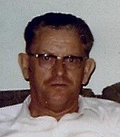
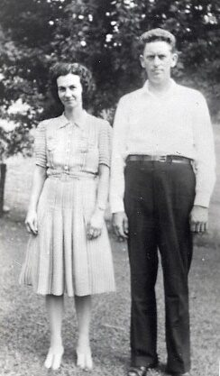
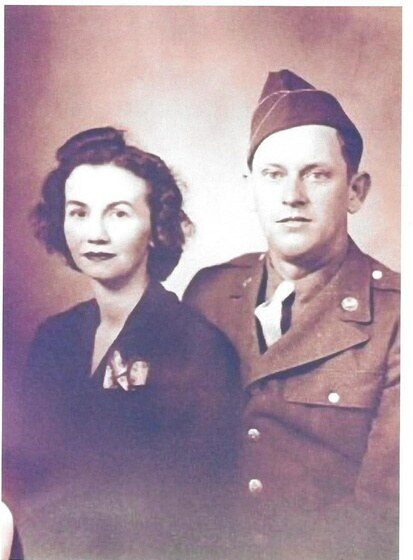
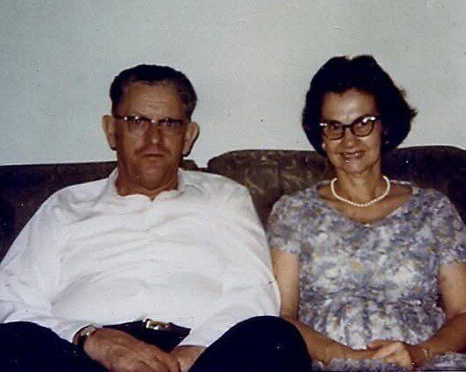
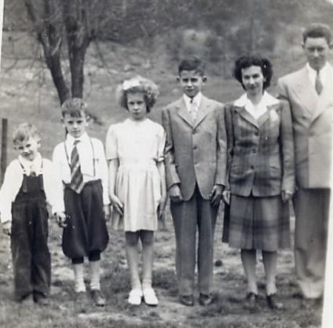
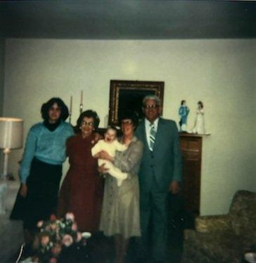
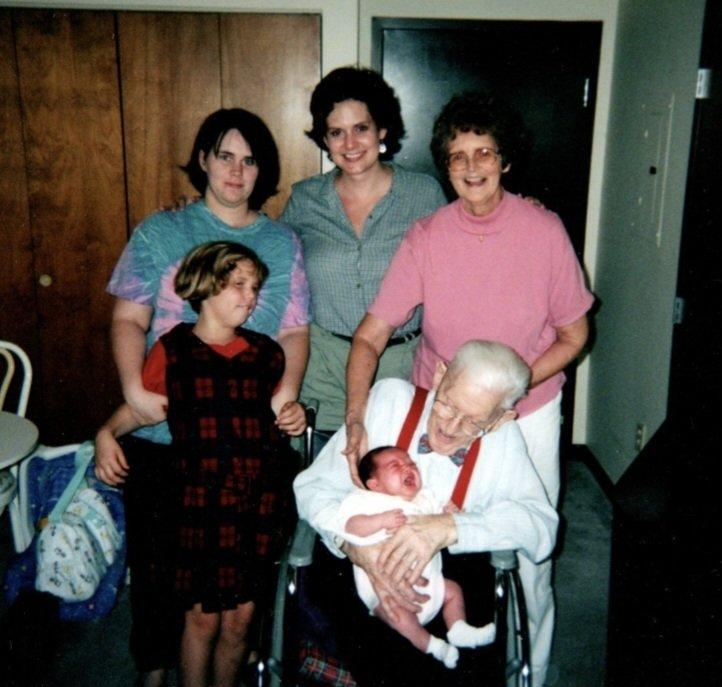
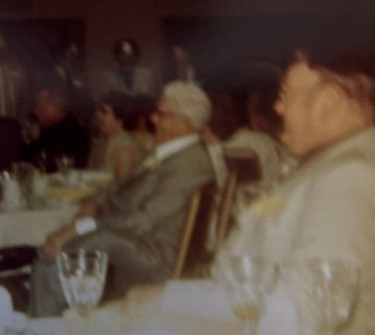

Arvel Lawrence Shamblen
20 January 1909 – 11 January 2001
Quick Facts
Immediate Family
Parents
David Clayton Shamblin (about 1869–1947) SUPPORTEDSarah Louise Staats (23 April 1871–1933) SUPPORTED
Children
Richard Lawrence Shamblen (4 Feb 1932 – 3 Oct 1968), also written Lawrence Richard DOCUMENTEDBetty Carolyn Shircliff (b. 17 April 1934) DOCUMENTED
Lowell Harold Shamblen (b. 18 December 1935) DOCUMENTED
Clifford Earl Shamblen (b. 27 January 1938) DOCUMENTED
Siblings
- Belvin “Moody” Shamblen–1966) SUPPORTED
- Frankie Odell (Shamblen) Parsons–1975) SUPPORTED
- Orpha Pearl (Shamblen) Casto–1955) SUPPORTED
- Rome LaFayette Shamblen–1983) SUPPORTED
- Sarah Lula / Louise (Shamblen) Foglesong or 1904) SUPPORTED
- Beryl Clayton Shamblen–1980) SUPPORTED
All six are in the 1910 or 1920 census household with Arvel, and a family account names the same six. Exact dates come from family lists and online trees. Other names sometimes attached to this family (an Orville, b. 1909, and a Josephine) are not confirmed as his siblings.
On Family Tree Sites
Couple Folder
Life Timeline
1909 · age 0
Born (20 Jan), Jackson County, WV DOCUMENTED
1910 · age 1
In his parents' household with six older siblings, Tug Fork Road, Ripley district, Jackson Co., WV DOCUMENTED
1920 · age 11
At home with his parents, Fairplain, Jackson Co., WV DOCUMENTED
1930 · age 21
Married Georgia Mae Fisher (24 Jan); farming on rented land, Ripley, Jackson Co., WV DOCUMENTED
1932–1938 · age 23–29
Four children born at home, Fairplain, Jackson Co., WV DOCUMENTED
1933 · age 24
Mother Sarah Louise died (7 Sep), Jackson Co., WV SUPPORTED
1940 · age 31
Family of six in the census, Ripley district, Jackson Co., WV DOCUMENTED
c. 1944 · age 35
Moved to 827 W. Washington Street; worked at DuPont, Belle, Charleston, WV FAMILY ACCOUNT
1944 · age 35
Enlisted in the U.S. Army (4 Apr), Fort Thomas, Kentucky DOCUMENTED
1945 · age 36
Service ended (7 Dec); discharged through Camp Atterbury, Indiana SUPPORTED
1947 · age 38
Father David Clayton died (16 Mar), West Virginia SUPPORTED
1950 · age 41
Family at 827 W. Washington Street, Charleston, WV DOCUMENTED
1968 · age 59
Son Richard killed in a truck crash (3 Oct), near Mt. Pleasant, Pennsylvania DOCUMENTED
1984 · age 75
Living at 711 Orchard Street, Charleston, WV DOCUMENTED
1988 · age 79
Wife Georgia died (3 Jul), Charleston, WV SUPPORTED
2001 · age 91
Died (11 Jan), Fairfield, Butler Co., Ohio DOCUMENTED
Life Story
Arvel Lawrence Shamblen was born on 20 January 1909 in Jackson County, West Virginia, the youngest son of David Clayton Shamblin and Sarah Louise Staats. The 1910 census finds him as a baby on Tug Fork Road in the Ripley district, the youngest of seven children then at home; by 1920 he was eleven and living at home at Fairplain. The family called him “Pop.”
He left school after the eighth grade and learned the carpenter's trade, much of it from his future father-in-law, Virdie Fisher. On 23 January 1930 the Jackson County clerk issued a license for Arvel, 21, and Georgia Fisher, 20, both of Fairplain, and the next day Rev. H. W. Harrison married them at Ripley. That spring's census shows the young couple farming on rented land in the Ripley district.
Four children were born at home at Fairplain between 1932 and 1938, beginning with Richard Lawrence on 4 February 1932. Arvel bought the Shamblen farm from his father in installments, and natural gas later found under the land added royalty income. In 1940 the family of six was still in Jackson County.
Around 1944 the family moved to Charleston, settling at 827 West Washington Street, and Arvel went to work as a carpenter and millwright at the DuPont plant in Belle. That April, at thirty-five, he enlisted in the Army at Fort Thomas, Kentucky. The family remembers basic training at Fort Knox, service in Europe, and a discharge through Camp Atterbury, Indiana, in December 1945.
After the war he went back to DuPont, built up a rental property on Elizabeth Street in Charleston, and promised each of his children $1,000 toward college. He and Georgia were Baptists at Calvary Baptist Church, where he served as an usher. They lost their eldest son, Richard, in 1968, and Georgia died in 1988. Arvel died on 11 January 2001 in Fairfield, Ohio, at ninety-one. The family says he was buried at Spring Grove Cemetery in Cincinnati, beside Richard.
More of Arvel's story will be added as family members share their memories.
Photo Gallery










Sources and Evidence
- 1910 U.S. census, Ripley district, Jackson County, WV, Tug Fork Road, ED 50, sheet 13A (Roll T624_1681): Arvel, 9/12, in the household of David C. and Sarah L. Shamblen DOCUMENTED
- 1920 U.S. census, Ripley district, Jackson County, WV (Roll T625_1954, p. 4A), indexed “Ariel L. Shamblin,” 11, with D. C. and Sarah L. Shamblin DOCUMENTED
- West Virginia, Jackson County marriage register, pp. 44–45: license 23 Jan 1930 (clerk Enoch Staats) for Arvel Laurence Shamblin, 21, born Jackson County, and Georgia Fisher, 20, both of Fairplain; married 24 Jan 1930 at Ripley by Rev. H. W. Harrison. Image in the couple's Documents folder (from Ancestry) DOCUMENTED
- 1930 U.S. census, Ripley district, Jackson County, WV (Roll 2535, p. 5B, dwelling 96): Arvel, 21, head, farmer, renting; wife Georgia, 20 DOCUMENTED
- WWII draft registration: born 20 Jan 1909, Ripley, WV; residence Fairplain; age 31; wife Georgia May Shamblen DOCUMENTED
- 1940 U.S. census, Ripley district, Jackson County, WV, sheet 7A (Roll T627_4410, ED 18-11): Arvel (indexed “Orvil L”), 31, wife Georgia, 30, and four children; residence in 1935 Kenna, Jackson County; Georgia's schooling high school 4th year DOCUMENTED
- U.S. WWII Army Enlistment Records: Arvel L. Shamblen, enlisted 4 Apr 1944, Fort Thomas, Newport, KY; Private; serial 35078624; carpenter; married; residence Kanawha County DOCUMENTED
- Deceased veteran benefit claim: born 20 Jan 1909; Army 4 Apr 1944 – 7 Dec 1945; died 11 Jan 2001 SUPPORTED
- 1950 U.S. census, 827 W. Washington St., Charleston, Kanawha County, WV: Arvel L. and Georgia M. with four children DOCUMENTED
- U.S. Public Records Index: Arvel L. Shamblen, 711 Orchard St., Charleston, WV, 1984 DOCUMENTED
- Ohio Deaths: Arvel L. Shamblen, b. 20 Jan 1909 WV, d. 11 Jan 2001, Fairfield, Butler Co., widowed, carpenter, Army veteran; father Shamblen, mother Staats; cert. 000547 DOCUMENTED
- Social Security Death Index: Arvel L. Shamblen, b. 20 Jan 1909, d. 11 Jan 2001, last residence Hamilton, Ohio SUPPORTED
- West Virginia Births Index: Arvel Laurence Shamblen, 1909, Jackson County (FHL film 567211) SUPPORTED
- Obituary index: Charleston, WV, published 14 Jan 2001 (gives birth about 1910) SUPPORTED
- Katherine A. Polsley Bryan, Genealogy of the Baltzly-Balsley-Polsley Family (1939): Georgia Mae Fisher m. 24 Jan 1930 Arvel Laur. Shamblin (b. 20 Jan 1908); lists three of the four children SUPPORTED
- Family accounts summarized in the couple profile (a son's written memoir; family photo captions) FAMILY ACCOUNT
Grades: DOCUMENTED an original record says it · SUPPORTED several records point to it · FAMILY ACCOUNT the family's own telling · UNPROVED a lead, not proved.
Research Notes and Open Questions
- Birth year: 1909 is backed by every record seen (death record, SSDI, draft card, enlistment, births index, and his age 21 on the 1930 license). Only the 1939 Polsley genealogy and some online trees say 1908; the couple profile still carries the year as open. A West Virginia birth record would close it.
- Burial: the family says Spring Grove Cemetery, Cincinnati, beside his son Richard; Geni and an older family account say Cross Lanes, Kanawha County, WV, with no cemetery named. A Spring Grove interment card or his 2001 obituary would settle it.
- Death place: Fairfield (Ohio death record) vs Hamilton (SSDI last residence only).
- Unit, overseas service and discharge place are from family accounts only; his discharge paper or personnel file (NPRC) has not been seen.
- Spelling: records use Shamblin and Laurence (marriage license); the family uses Shamblen and Lawrence.
- The Ancestry profile linked below was created early in the research with vitals that do not match the records (an October 2026 note records a 1978 Columbus death date there); check it before relying on it.
- His 2001 obituary (Charleston, WV) has not been read.
DNA
No DNA matches linked yet.